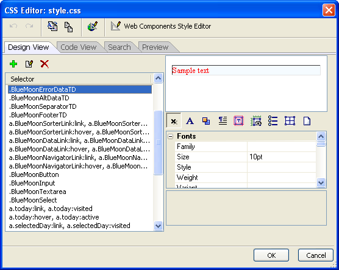

A5_CSS_EDITOR()
Syntax
Style_Sheet as C = A5_CSS_EDITOR( Style_Code as C, CSS_Path as C, CSS_Name as C [, From_File as L ] )
Argument | Description |
Style_Sheet | The final contents of a new or edited cascading style sheet. |
Style_Code | The initial contents of a new cascading style sheet. NULL when editing an existing style sheet. |
CSS_Path | The location of the cascading style sheet. |
CSS_Name | The name of the cascading style sheet. |
From_File | Optional. Default = .F.
|
Description
The A5_CSS_EDITOR() function displays the CSS Editor, which allows you to edit multiple styles in a cascading style sheet.

Limitations
Desktop applications only.
Example
Edit from a file:
a5_css_editor("","C:\Program Files\A5V8\CSS\Bluemoon\","style.css",.t.) |
Edit from a string:
a5_css_editor("a{color: red;}","C:\Program Files\A5V8\CSS\Bluemoon\","My Style Title") |
See Also
Web Component Functions